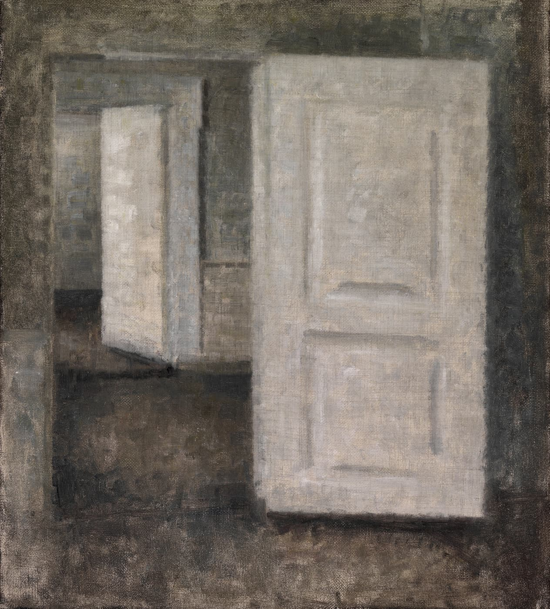

Who said what
Stated, decided and inferred are labeled apart. An agent’s guess never passes for your decision.
Decision D-2Decided
Exported files include a UTF-8 BOM
“Yes, or non-English text comes out garbled.”Zhou · 10:12 · answers Q-1
Keep your project aligned, from discussion to delivery.

Notes and tradeoffs scatter, and one requirement can be read two ways.
Keep one sourced reading, then bring commit evidence back into the discussion.
Below is a discussion about exporting bills. Turn on a message and Nema files it as entries, noting whether someone stated it, someone decided it, or the agent inferred it.
Stated, decided and inferred are labeled apart. An agent’s guess never passes for your decision.
Exported files include a UTF-8 BOM
“Yes, or non-English text comes out garbled.”Zhou · 10:12 · answers Q-1
The knowledge base is a Git repository. What changed, why, and what it said before are all on record.
Bind a local repository and the agent reads a snapshot of main and searches it, so the discussion knows what already exists.
A diagram drawn from code remembers which commit it came from. When the code moves on, the diagram says so.
Unclear points, and a statement that conflicts with an active decision, become questions. Nema asks and waits for you. Only what needs your answer is marked red.
Switch between Chinese, English and Japanese at any time. The language entries are written in is a separate setting.
First, talk it through. Entries file themselves.
Then answer the open questions, one by one.
Next, approve the work package for a coding agent.
Commit reports come back into the discussion.
The desktop app packs the whole stack into one program: the database, the local core, and Node. It uses Git 2.31 or later already installed on your machine. On a Mac, an app opened from the Finder also finds Homebrew and MacPorts Git. No Docker, and no database server. Discussion text goes only to the model provider you choose, and Nema never touches your GitHub token.
Status
Yes. The latest release has a Windows x64 installer, a Windows portable ZIP, and an Apple Silicon disk image. The ZIP is the unpacked app: unzip it and run Nema.exe. It has no shortcuts or uninstaller. The installer and the ZIP both use ~/.nema/desktop. Pick one. Installers are unsigned, so Windows shows “Windows protected your PC” the first time, and macOS asks you to open it from Privacy & Security. The app also needs Git 2.31 or later on the machine. Intel Macs have no desktop build. On Linux, use the linux/amd64 hub and web images, or build from source.
Nema Room itself is open source under the MIT license. Filing entries calls a model, so cost or quota depends on your provider: a ChatGPT or Claude subscription, or your own API key.
The database and knowledge base stay on your computer. Only when entries are generated is the relevant text sent to the model provider you chose. Services listen on your machine only; don’t expose them to the internet.
Run nema report install to add report hooks to Codex or Claude Code. Each commit notifies Nema; if Nema isn’t running, reports wait locally and go out next time.
The first release is for one person on one machine. Multi-device sync, backups and read-only team access come after the local core is done.
The name comes from nemawashi (根回し): understanding before a decision. Disagreements stay visible, and the decision keeps its evidence.
Windows x64 and Apple Silicon builds are on the latest release. On Windows, pick the installer or the portable ZIP. The ZIP unzips to Nema.exe, with no shortcuts or uninstaller. Both use ~/.nema/desktop. The app needs Git 2.31 or later already on the machine.
The host command is nema, from npm i -g @nema-project/nema@<locked version>. That number is the version both image: pins in the docker-compose.yml you fetched carry; nothing writes it into .env for you yet. Hub and web images are linux/amd64. A release from the current workflow also attaches a rendered docker-compose.yml pinned to that version. No published release carries it yet, so docker-compose.yml on tag v0.1.5 pins ghcr.io/nema-project/nema-room-hub:0.1.5 and ghcr.io/nema-project/nema-room-web:0.1.5. Fetch that file, then start them. That tag file is not a release asset. On Linux and macOS, export NEMA_UID and NEMA_GID first. To develop this repository, clone it and run the setup wizard.
npm i -g @nema-project/nema@<locked version>
nema --version
# Hub and web, linux/amd64. No release asset yet; take the compose file from tag v0.1.5.
curl -fsSLO https://raw.githubusercontent.com/Nema-Project/nema-room/v0.1.5/docker-compose.yml
# Linux and macOS only. Docker Desktop on Windows does not need this.
export NEMA_UID="$(id -u)" NEMA_GID="$(id -g)"
docker compose up -d
# Or build this repository from source
git clone https://github.com/Nema-Project/nema-room.git
cd nema-room
node scripts/setup.mjs --lang en